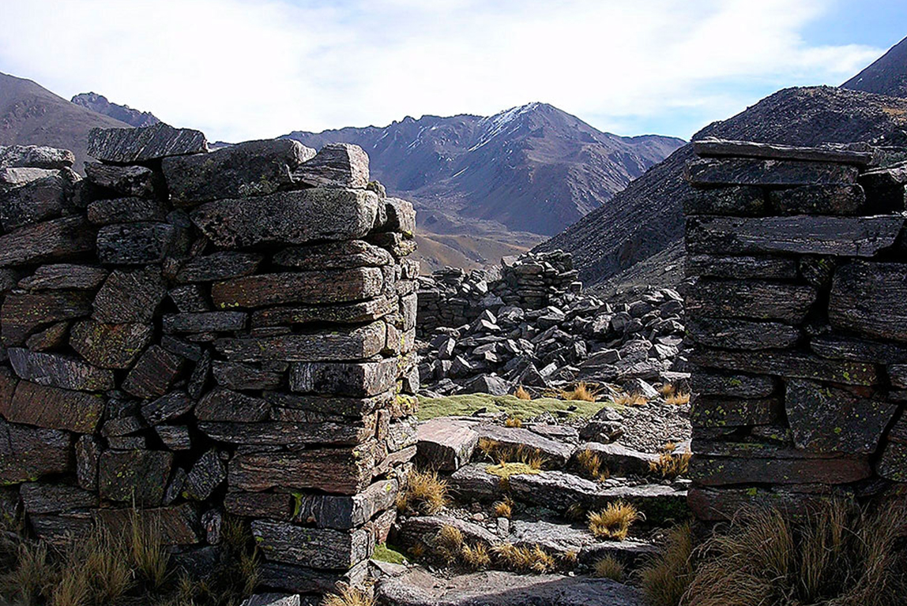
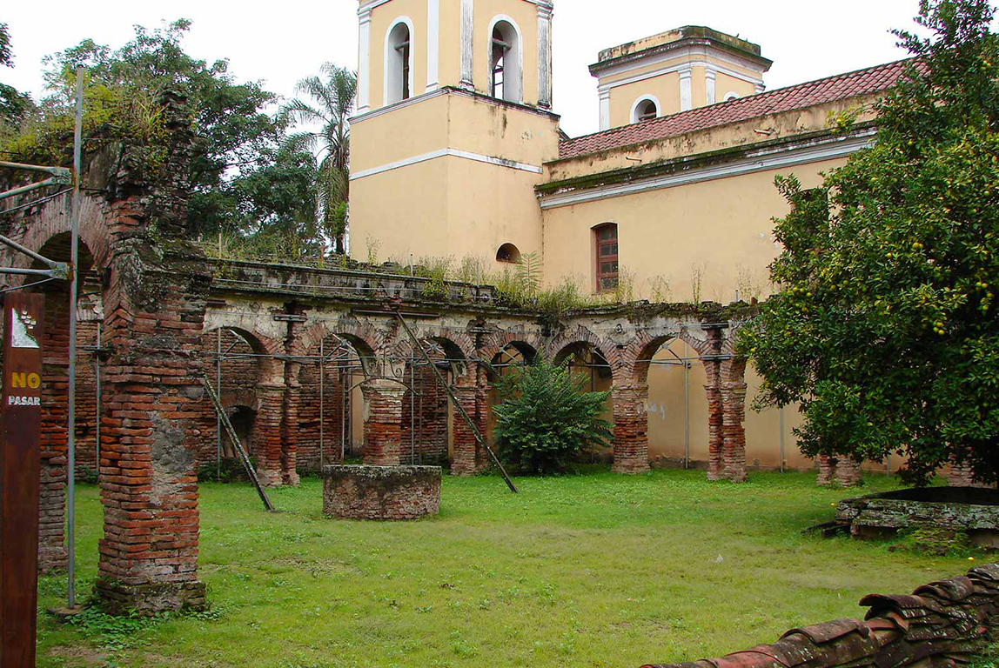
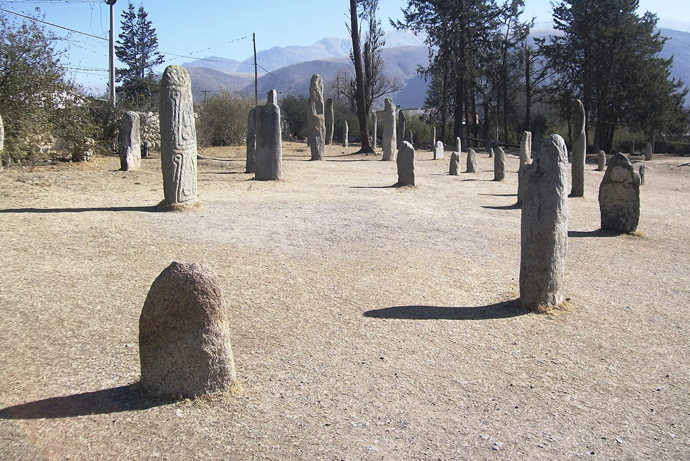

¿Puede imaginarse estar frente a pircas, menhires y piedras que datan de hace cientos de años y que aún conservan sus raíces prehispánicas?
Quien visite Tucumán no solamente respirará el aire puro de los cerros o caminará las calles de la ciudad de la Independencia: palpitará además un legado arqueológico único, testimonio de las culturas precolombinas que forman parte de la identidad de la provincia.
Circuitos Turísticos
Tucumán encierra algunos de los destinos más paradisíacos de Argentina. Con la ventaja de tener distancias cortas y buen clima durante todo el año, cada uno de los circuitos turísticos que ofrece la provincia invita a vivir una experiencia única entre la historia que guarda la ciudad y la magia de su vegetación, sus diques, cerros y valles.
Parques y Reservas
Entrar en contacto directo con la naturaleza, sumergirse en la selva tucumana, explorar la perfección de los valles y conocer centenares de aves, mamíferos, árboles y ríos en su estado natural, es lo que propone Tucumán con sus parques y reservas. Lejos del ruido urbano, conocerán el significado real del Jardín de la República.
Circuito Religioso Ciudad Histórica
Hasta el más escéptico de los turistas experimentará en Tucumán un sentimiento de emoción al visitar las numerosas Iglesias y Capillas que se pierden entre edificios, valles, lomadas y cerros. Cada una de ellas guarda una historia de fe que atrapa al visitante.
En esta sección, conocerá cuáles son los circuitos religiosos, la arquitectura que poseen y los secretos que encierran.
Rutas Temáticas
Una opción ideal para recorrer los puntos más interesantes de la provincia, son las rutas temáticas. Esta propuesta ofrece un paseo por distintos sectores tucumanos en los que el visitante encontrará un mix de cultura y naturaleza ideal para disfrutar su estancia en el Jardín de la República.

Ruinas La Ciudacita
Los estudios realizados demuestran que las ruinas representan el extremo sud del imperio incaico. Consisten en recintos construidos escalonados sobre el filo, a partir de un campo ceremonial de forma rectangular, de 40 metros de ancho por 60 metros de largo denominado en el lenguaje incaico “Kalasasaya”. La obra impresiona por el tamaño de la superficie y la calidad del trabajo realizado con piedras lajas de color grisáceo. Las pircas tienen una altura de un metro y se observan los destrozos realizados por el paso del tiempo y la acción de guanacos y otros mamíferos.
El este, se accede hacia otro grupo de recintos y luego el camino continúa ascendiendo, ya hacia el oeste, en busca del Portezuelo de Los Campos Colorados que tiene casi la misma altura de las ruinas. Luego de traspasarlo, el camino desciende en dirección de Ampajango, provincia de Catamarca.
Es evidente que construyeron el pueblo para establecer relaciones con los hombres del llano, y en ese lugar, por cuanto permite una visión abierta de la zona donde nace el sol. Estas ruinas, por su técnica constructiva, tienen relación directa con las ruinas de la antigua Fortaleza del Campo Pucará, en el Valle de Las Estancias. Estas poblaciones fueron desocupadas hacia mitad del siglo XVII, al terminar la segunda guerra calchaquí. Los conquistadores españoles realizaron cabalgatas para erradicar la población indígena y ubicarlas en las encomiendas del bajo tucumano donde las obligaban a trabajar en la agricultura.
Las ruinas forman parte del Parque Nacional Los Alisos, ubicado al sur de la provincia. Para visitarlas, se debe ir acompañado de guías expertos en estas actividades de montañismo. Puede consultar los prestadores habilitados en: PRESTADORES
Para más información o para dar aviso de tu llegada, podés contactarte directamente con la administración del Parque Nacional.
Contacto: (03865) 15405985 / (03865) 15405987
Ruinas de Condorhuasi
Entre el verde de los valles, el azul del cielo y el marrón de los suelos, la historia de las Ruinas de Condorhuasi impactará al turista.
Localizadas en El Pichao, a 8 kilómetros de Colalao del Valle, estas ruinas fueron el lugar en donde se refugiaron algunos aborígenes después de la caída de los indios Quilmes en manos de los españoles en 1667. El sitio ya había sido ocupado anteriormente por grupos indígenas de agricultores y pastores poco después del comienzo de la era cristiana, y se desarrolló especialmente entre los años 1000 y 1500.
puede recorrer la parte central, que posee una superficie cubierta con terrazas de cultivo, obras de irrigación y estructuras habitacionales realizadas en piedra, similares a las de los Quilmes, lo que hace suponer que también fueron un pueblo desarrollado.
Otro paseo interesante son los cementerios en los que el visitante se enterará de datos curiosos como los entierros de adultos realizados en cestas de piedra cubiertos por una piedra plana o los de niños, inhumados en urnas de alfarería.
Para acceder a las ruinas, se debe realizar una caminata de aproximadamente 300 metros en donde se descubrirán estos vestigios arqueológicos a la vera del río el Pichao.

Ruinas de San José de Lules
No es en vano que las Ruinas de San José de Lules sean Monumento Histórico Nacional desde 1944 ya que son un vivo testimonio de la época de la conquista española y sitio en donde los jesuitas cultivaron por primera vez la caña de azúcar.
Están formadas por una antigua capilla y un convento que fueron fundados por la Compañía de Jesús en 1670. Desbordados de historia, allí se ubican los dormitorios, el almacén, los talleres y el colegio donde estudiaban los indios Lules. Además, allí funcionó el primer colegio público de la Argentina. Actualmente, en la antigua sacristía, funciona el museo.
Sin embargo, eso no es todo: Manuel Belgrano y José de San Martín acamparon en este lugar durante las guerras de Independencia.
La visita a San José de Lules se puede hacer de diferentes maneras ya que el camino es de muy fácil acceso. Si el visitante desea realizarlo de manera particular, podrá llegar a ellas desde la ciudad capital, por Ruta Provincial Nº 301 recorriendo aproximadamente 18 kilómetros, 2 antes de encontrar el acceso a la ciudad de Lules.
Otras opciones son el traslado por transporte público desde terminal de ómnibus o bien contratar alguna excursión con una agencia privada. Para consultar por los prestadores que realizan las mismas puede ingresar a: AGENCIAS RECEPTIVAS
Las Ruinas de Lules se pueden visitar en los horarios de: 9 a 18 hs.
Ruinas de Quilmes
Aunque cuesta imaginar que hacia el año 800 d.C los Quilmes estuvieron allí y fueron uno de los asentamientos prehispánicos más importantes de los pueblos Calchaquíes, el paisaje de las Sierras y el cordón Calchaquí enamora al visitante y habla por sí solo.
Los Quilmes fueron un poblado indígena que alcanzó un inmenso desarrollo social y económico; en el siglo XVII llegó a tener 3.000 habitantes en el área urbana y 10.000 en los alrededores. En la falda del cerro, el turista podrá advertir las reconstrucciones de la zona residencial, rematada por una fortaleza situada en la cima y dos fortines a ambos costados, sobre la cornisa.
El visitante podrá recorrer el complejo acompañado por un guía y quedará sorprendido al conocer cada detalle del último bastión de la resistencia aborigen ante el avance español, que claudicó recién en 1667, cuando 1.700 sobrevivientes fueron trasladados a pie hasta las proximidades de Buenos Aires (actual ciudad de Quilmes), adonde llegaron apenas 400.
Para llegar a la Ciudad Sagrada de Quilmes en vehículo particular, se debe tomar desde Amaicha del Valle la Ruta Provincial Nº 307, recorrer 15 kilómetros aproximadamente hasta empalmar con Ruta Nacional Nº 40 y desde allí, continuar 3 kilómetros más en dirección norte. A mano izquierda deberá ingresar por un camino de tierra que, 5 kilómetros más adelante, le permitirá acceder al lugar. En caso de no contar con vehículo propio, es posible contratar una excursión con una empresa privada desde la ciudad de San Miguel de Tucumán, o bien ir en micro hasta Amaicha del Valle y desde ahí contratar la excursión ya que ninguna empresa de transporte público llega hasta dicho sitio.

Reserva Los Menhires
La palabra menhir es de origen celta y significa “piedra larga” aunque sería más pertinente usar el término quechua “huanca” o “wanka”, que se refiere a los indígenas como protectores y propiciadores de los cultivos y el ganado.
Lamentablemente, los menhires fueron trasladados varias veces y eso perjudicó su estudio y protección, ya que no se pudo registrar toda la información necesaria para interpretar su significado. Sin embargo, se dice que para las razas primitivas eran monumentos al culto de la fecundidad.
Fueron hechos en roca metamórfica, con inclusiones de cuarzo y granito en algunos de ellos, materiales que se encuentran en todo el valle. Sorprenden las formas que se representan en los menhires: rostros humanos o animales especialmente felinos, formas geométricas o combinaciones de los distintos tipos. En algunos casos está muy insinuada la forma fálica, en otros menos, y los documentos más antiguos para el área andina los asocian con prácticas propiciatorias de la vida, con el ancestro Huanta y los primeros asentamientos en los valles.
La Reserva se encuentra frente a la Plaza Principal de El Mollar, por lo que llegar hasta el lugar es muy sencillo, se puede hacer en vehículo particular o bien en micros que salen desde la terminal de ómnibus de la capital.
Piedra Pintada
Piedra Pintada es una roca de enorme tamaño ubicada a sólo una hora y media de caminata desde el centro de San Pedro de Colalao. Es una de las reliquias más valiosas de la villa que se encuentra entre ríos y cerros, sobre una meseta rodeada de vegetación. Impactante, se alza esta piedra de 3 metros de largo, 2,30 metros de ancho y más de 1,50 metros de alto, enterrada unos 2 metros por debajo del nivel del terreno.
No sólo es el tamaño lo que captura la atención de quien la conoce sino que, esta roca descubierta en 1877 por el profesor Inocencio Liberan, presenta 45 figuras que muestran contornos de aves y otros animales tallados en sus caras laterales. Aunque se desconoce su significado, se induce que está relacionado con cultos a la fertilidad y las cosechas.
Se recomienda realizar el paseo con la compañía de guía local debido a que en el camino, se atraviesa el río Tipa más de una vez.
Circuito Valles Calchaquíes
Recorrido turístico por excelencia que busca el acceso al Norte Argentino a través de las montañas. Tierra extraordinaria que ofrece miles de sorpresas con un encanto antiguo, donde historia, naturaleza, tradiciones, arqueología y mitos, forman una alianza excepcional. Lo que la constituye en una región turística de inevitable asombro.
Recorrer este circuito le tomará al visitante como mínimo dos días, ya que la oferta de lugares para visitar es bastante amplia. Si la idea es realizar además algunas de las actividades que ofrece el turismo aventura, deberán disponer de más tiempo.
Entre las distintas actividades que ofrece, se destacan: cabalgatas, mountain bike, recorridos en 4x4, trekking, etc.
Circuito Valle de Choromoro
Otro de los paseos de los cuales el turista se enamorará es el del Valle de Choromoro, en el que el verde de los cerros y un clima agradable lo invitarán a conocer culturas precolombinas, monumentos coloniales, yacimientos arqueológicos y legados históricos que merecen ser explorados.
Reconocido por ser una de las mejores zonas productivas de Argentina, este hermoso Valle, se caracteriza por la actividad agrícola-ganadera, destacándose la cría de ganado y también sus tambos que dan lugar a la fabricación de quesillos, quesos y de dulces artesanales. Otros destacados son sus conocidos cultivos de higos, como también sus criaderos de pollos.
A lo largo de la Ruta Provincial Nº 312, el visitante descubrirá paisajes únicos, valles ideales para olvidarse del tiempo y disfrutar de la naturaleza.
Circuito Sur
Este recorrido por el sur tucumano invita al turista a conocer algunas de las ciudades más pujantes de la provincia y a empaparse de la historia de pueblos que crecen año tras año y conservan sus sellos distintivos, como Lules, Monteros, Concepción, las Ruinas de la Ciudacita, el parque Cochuna y nada menos que la capital nacional del Sulky: Simoca.
Circuito Las Yungas
El visitante podrá conocer lugares paradisíacos en este circuito y disfrutará de la paz y la infinidad de actividades en Yerba Buena, de las lomas y quebradas soñadas de Villa Nougués, de los cerros y la vista panorámica única de la ciudad desde San Javier y de los bosques verdes y tupidos de Raco y El Siambón. Además, descubrirá el testimonio de una de las fábricas azucareras más destacadas de la provincia en el ex ingenio San Pablo y podrá relajarse en un atardecer frente al dique El Cadillal.
Ciudad Histórica
Sin duda, el primer circuito que debe recorrer el turista es el de Ciudad Histórica, donde se sumergirá en las raíces de la provincia que vio nacer en sus calles a la Independencia Argentina. En este paseo, conocerá los edificios y lugares cívicos más importantes del Norte Argentino como ser la Casa Histórica, la Plaza Independencia, museos y galerías de arte, iglesias empapadas de historia y callecitas de adoquines con color autóctono, entre otros de significativa importancia.
Parque Provincial Ibatín
Ubicado en el departamento de Monteros, el Parque Provincial Ibatín, fue creado en 1965 con aproximadamente 120 hectáreas para proteger el sitio de la primera fundación de San Miguel de Tucumán. Constituye uno de los sitios arqueológicos más importantes de Sudamérica en lo referente al periodo Colonial Temprano.
Diego de Villaroel fundó la ciudad en el año 1565 a orillas del río Pueblo Viejo, en plena selva pedemontana. La traza fundacional se realizó en forma de damero, con una plaza en el centro respondiendo al modelo de las ciudades hispanoamericanas que se fundaron durante los siglos XVI y XVII. Las constantes inundaciones, las fiebres palúdicas y la nueva traza del camino que bajaba desde el Alto Perú, fueron algunas de las causas por las que la ciudad fue trasladada 120 años después a su actual emplazamiento dando lugar a su segunda fundación.
Las primeras excavaciones arqueológicas, realizadas en 1965, descubrieron los cimientos de la plaza principal, el antiguo cabildo e iglesias, las cuales dan fe de la temprana presencia de los jesuitas en la provincia de Tucumán. También se encontró una jarrita de plata labrada de origen español, que fue robada y después de muchos años reencontrada por una historiadora tucumana; hoy, el turista puede apreciarla en el Museo Histórico Provincial Nicolás Avellaneda.
Ibatín se encuentran en la comuna de León Rouges, a 6 kilómetros de Monteros. Para llegar hay que seguir la Ruta Provincial Nº 325, cruzar el puente sobre el río Pueblo Viejo, doblar a la izquierda y continuar por un camino de tierra. Después de aproximadamente 5 kilómetros se accede al sitio de Ibatín. Para llegar hasta allí no hay transporte público directo desde capital. Puede acceder en vehículo particular o bien dirigirse en micro hasta Monteros y desde allí contratar el servicio de un remis rural para el traslado hasta el lugar.
Parque Provincial Los Ñuñorcos
El parque provincial Los Ñuñorcos fue creado en el año 1965 y abarca 9.600 hectáreas en el departamento de Tafí del Valle correspondiendo a las ecoregiones de yungas y altoandinas. Ambos cerros, Ñuñorco Grande y Ñuñorco Chico, formaron parte del antiguo camino Inca por lo que conservan sitios de gran importancia arqueológica. Es probable que allí hayan tenido lugar algunas ceremonias indígenas dada la amplia visión que se obtiene de la llanura tucumana e incluso de “La Ciudacita”, recinto arqueológico inca ubicado en el Parque Nacional Los Alisos.
En 1996 se creó la reserva Quebrada del Portugués con la finalidad de preservar el patrimonio natural y cultural de la zona junto a su historia, vegetación soñada y numerosas especies de animales. Está ubicada entre los departamentos de Tafí del Valle y Monteros y abarca una superficie de aproximadamente 12.000 hectáreas colindantes con el Parque Provincial Los Ñuñorcos. Hacia el sur, la reserva limita con el Parque Provincial La Florida. Las tres áreas protegidas forman una importante unidad de conservación del patrimonio ambiental y cultural de la provincia. A lo largo de la reserva es posible ver menhires con años de historia.
Este camino fue utilizado por los pueblos originarios, por los Incas y más adelante, por conquistadores españoles ya que servía como conector entre el Valle de Tafí y la llanura tucumana. Fue una importante vía de comunicación hasta que, en el siglo XVIII, el centro de la actividad se posicionó en Buenos Aires dejando el paso por la quebrada sin uso y aislado de todo movimiento comercial.
La corzuela colorada, los pecaríes, el guanaco y varias especies de felinos son parte de las atracciones de esta reserva, que además cuenta con sitios para la preservación del cóndor andino y de aves migratorias.
Parque Provincial La Florida
Quien camine en el Parque Provincial La Florida, a sólo 60 kilómetros de la capital, lo hará en un escenario único, empapado de historia. El ambiente original de las yungas, tal como lo vivieron los pueblos indígenas, ofrece belleza y deslumbra a quienes lo visitan.
Se trata de la primera área protegida provincial de la nación, creada en 1936 por la Ley Provincial Nº 1646.
Para llegar al parque, ubicado entre los pueblos Capitán Cáceres y Sargento Moya, se puede tomar desde Famaillá la Ruta Provincial N° 324 (ruta interpueblos). Luego de pasar por el primer poblado mencionado (30 kilómetros aproximadamente), deberá continuar entre 3 y 4 kilómetros hasta encontrar la entrada al vivero del parque.
La Florida, de aproximadamente 14.000 hectáreas, conserva uno de los pocos relictos de selva pedemontana en terrenos planos, tipo de vegetación que cubría gran parte de la superficie tucumana ocupada actualmente por grandes extensiones de cultivos o por poblados. Además de esta zona de terrenos planos, se puede acceder a zonas de pastizales de neblinas y altoandinos, altitud que va desde los 550 a los 5.400 metros sobre el nivel del mar pudiendo observar alrededor de 39 especies de mamíferos y 58 especies de aves.
La ruta interpueblos antes mencionada, atraviesa el parque dejando el sector plano divididos en dos. Hacia el este, se encuentra la zona del vivero junto a un bosque de antiguos árboles. Abarca alrededor de 300 hectáreas y cuenta con merenderos, zona de camping agreste y senderos autoguiados con cartelería. Constituye un espacio ideal para observar la flora y fauna del lugar. Hacia el oeste, se encuentra el área más restringida. Cuenta con senderos muy interesantes e incluso con la presencia de yacimientos arqueológicos prehispánicos en la zona de las sierras.
Un maravilloso paseo, es el de la mesada o campo de las azucenas. Durante la segunda quincena de octubre, se produce la floración natural de esta hermosa flor creando una alfombra roja que tapiza el suelo cada año de tonos rojizos y naranjas. Este sitio, es probablemente el mejor para poder apreciarlas. Las azucenas son un tipo de planta silvestre del área de yungas presentes desde Salta hasta Catamarca.
Reserva Natural Santa Ana
Ubicada en el departamento de Río Chico, la reserva Santa Ana fue creada en 1972 para proteger los ambientes naturales del Aconquija. Es una de las reservas más grandes de Tucumán, tiene entre 18.000 y 20.000 hectáreas y es la zona protegida yungueña más austral del país. Sin embargo, es una de las menos conocidas debido a su difícil acceso.
Ocupa una importante superficie de selvas, bosques y pastizales, que se conserva inalterada junto a más de 30 especies de mamíferos y similar cantidad de aves. Es administrada por la "Dirección de Recursos Naturales y Riego de la Provincia".
Las actuales tierras de la reserva pertenecieron en un comienzo, al ingenio Santa Ana, el complejo agroindustrial más importante del país hacia fines de 1800. Fueron años de prosperidad para los habitantes de la zona hasta la década de 1930 en donde comenzó el declive. Tras un largo periodo de pruebas en manos de diferentes propietarios, el ingenio fue cerrado en 1979 y sus tres chimeneas dinamitadas.
Desde San Miguel de Tucumán se accede a ella por la Ruta Nacional Nº 38 hasta la localidad de Río Chico y luego por la Ruta Provincial Nº 332 en dirección oeste aproximadamente 15 kilómetros.
Actualmente, la reserva cuenta con un grado de preservación estricta por lo que no admite visitantes.
Reserva Provincial La Angostura
Un imponente marco de montañas y valles rodean el espejo de agua del dique La Angostura. Se accede por la Ruta Provincial Nº 307, camino a Tafí del Valle (pasando en este trayecto, por la Reserva Provincial Los Sosa). Alrededor de 1400 hectáreas fueron declaradas reserva en el año 1996 debido a su importancia biológica. Busca proteger una gran diversidad de especies de aves acuáticas y migratorias, muchas amenazadas de extinción.
El humedal de La Angostura funciona interconectado con los humedales altoandinos, de las Yungas y chaqueños, preservando una fauna de aves y mamíferos emblemáticos. Además, forma parte de la ruta migratoria andina que enlaza los valles intermontanos con la puna de Argentina, Bolivia y Perú.
El proyecto original, suponía el aprovechamiento del río Angostura mediante la construcción de una presa de embalse más tres centrales hidroeléctricas a lo largo del río Los Sosa. Finalmente, sólo llegó a ejecutarse la presa de embalse significando un gran aporte al turismo, los deportes náuticos y la preservación de la avifauna que, con el transcurso de los años, lo adoptaron como un nuevo hábitat disponible en las montañas.
Las villas veraniegas de El Mollar y Tafí del Valle disponen de amplios servicios para el visitante y son uno de los principales destinos turísticos de la provincia.
Reserva Provincial Los Sosa
Fue creada en el año 1940 y se encuentra ubicada dentro del departamento de Monteros, en el corredor turístico más importante de la provincia, la Ruta Provincial N° 307 que conduce a los valles Calchaquíes, entre los kilómetros 20 y 38.
Sus 890 hectáreas protegen 18 kilómetros que ascienden desde los 650 hasta los 1750 metros de altura sobre el nivel del mar. Debido a las condiciones biogeográficas, a medida que se incrementa la altitud, se puede percibir la disminución de la biodiversidad.
Dentro de la reserva se destacan tres ambientes de Yungas. La selva pedemontana presente entre los 400 y 700 metros de altura, es la de menor estado de conservación debido a la intervención de la actividad humana. La selva montana, entre los 900 y 1400 metros de altura, con especies características como el laurel y por último, el bosque montano, entre los 1500 y 2600 metros de altura. Las laderas y quebradas abruptas dificultan la caminata hacia el interior de la reserva, característica que ha permitido mantener la naturaleza en un muy buen estado de conservación.
Es también un área de suma importancia para la preservación de fauna. Fueron registradas más de 62 especies de mamíferos, 15 especies de anfibios y 115 especies de aves. Además, forma parte de dos rutas migratorias: altoandina y panamericana central.
Hay varios sitios de interés turístico donde es posible detenerse a admirar la naturaleza o el río que acompaña todo el camino. No hay hospedaje en Los Sosa, por lo que se recomienda buscarlo en El Mollar o Tafí del Valle, los pueblos más cercanos.
Museo del Arte Sacro
El Museo de Arte Sacro fue fundado en el año 1968 como museo de la Iglesia Catedral. Desde el año 2001 cuenta con una nueva sede y pertenece a la Arquidiócesis de Tucumán.
Las piezas que se exhiben, reflejan la historia y el arte de la iglesia católica y de la sociedad tucumana desde el siglo XVII hasta nuestros días, representando en su mayoría, la fusión de dos culturas: española e indígena. El objetivo de su creación, fue rescatar las piezas artísticas de distintas iglesias y capillas que con el Concilio Vaticano II quedaron en desuso, para preservarlas y darlas a conocer a las futuras generaciones.
El museo cuenta con cinco salas en donde se exhiben pinturas, esculturas, ornamentos de platería, mobiliario, entre otros. Incluye piezas de arte americano, mestizo, europeo y argentino. De su patrimonio se destaca el antiguo óleo alto peruano que representa a la Virgen del Rosario de Pomata, la pintura neoclásica de la Conversión de San Pablo, objetos de los obispos de Tucumán, elementos coloniales y otras antigüedades de gran valor. También, la imagen de San Francisco de Paula del período colonial, hecha en madera; una Casulla bordada del siglo XVIII que perteneció a la iglesia de Santa María Magdalena de la Compañía de Jesús en Tucumán y un reclinatorio que fue utilizado por el Papa Juan Pablo II durante su visita a Tucumán en el año 1987.
En el jardín se exhibe un mural titulado “La Pasión”, obra realizada especialmente para el museo por el artista plástico tucumano Isaías Nougués en el año 2011.
En el sector final, se creó una nueva sala destinada a la exhibición de muestras itinerantes. Además, cuenta con dos nuevos murales “La sagrada familia” y “Crucifixión”, obras del pintor e ilustrador Juan Antonio Ballester Peña. Ambos, de más de dos metros de altura, fueron donados al museo por el arzobispado de Tucumán.
Basílica Menor Nuestra Señora del Rosario- Iglesia Santo Domingo
También conocida como Basílica Menor Nuestra Señora del Rosario, se encuentra en calle 9 de Julio 165. Tiene una fachada neoclásica con reminiscencias italianizantes que la han convertido en una de las iglesias más lindas del noroeste argentino.
La orden dominica se instaló hacia el año 1785, momento en que se fundó el convento. La iglesia heredada estaba situada en la esquina suroeste de las actuales calles Crisóstomo Álvarez y 9 de Julio.
En el año 1863 el Prior Zeballos hizo colocar los cimientos de la nueva iglesia de una sola nave pero años más tarde el vicario general P. Correa, estableció que debía ser de tres naves, contratando al arquitecto Nicolás Cánepa para llevar adelante la obra, que tuvo su inicio con la colocación de la piedra fundamental en el actual sitio de la iglesia en el año 1866. El 5 de octubre de 1884 la obra quedó finalizada y fue inaugurada por Fray Ángel María Boisdron durante la festividad de la Virgen del Rosario.
En su interior se conservan interesantes piezas como el Cristo Yacente, una escultura colonial del Alto Perú del siglo XVIII; la imagen de la Virgen Nuestra Señora del Rosario "La Milagrosa", talla de bulto completo vestida del S. XVI; la imagen de San José con el Niño de la escuela española del S. XIX; Santo Domingo Penitente, de Ricardo Valero, imagen española traída de Barcelona a fines del S. XIX; el Nacimiento de Cristo, un vitral realizado por Fray Guillermo Butler OP; la imagen de Santo Tomás de Aquino de la escuela española del S. XIX y un antiguo órgano aún en uso.
En la entrada al templo se encuentran las estatuas de los congresales Fray Justo Santa María de Oro, diputado por la provincia de San Juan en el Congreso de Tucumán de 1816 y Fray Manuel Pérez.
En 1942 Pío XII le otorgó el título de Basílica Menor, siendo la primera en nuestra provincia que posee tal distinción.
El antiguo convento quedó adosado a la iglesia por el lado norte de la misma. Actualmente, funciona allí la Universidad del Norte Santo Tomás de Aquino.
Basílica Menor de la Merced
La orden Mercedaria estuvo presente en la fundación de la ciudad y edificó allí su templo y convento. Al producirse el traslado al sitio de La Toma, les fue entregado el solar de la actual esquina de 24 de Septiembre y Virgen de La Merced.
Originalmente fue una humilde capilla pero debido a su lamentable estado de conservación, en el año 1834 se comenzó a construir una nueva iglesia ubicada a un costado de la anterior. En el año 1916 debió ser clausurada ya que la construcción no era segura y veintiséis años después fue demolida para dar comienzo a la edificación del templo que actualmente se conoce como Iglesia de la Merced. La obra, inaugurada en 1950, fue costeada por el gran filántropo tucumano Alfredo Guzmán y su esposa Guillermina Leston, quedando un edificio de estilo neocolonial con tres naves.
El 5 de agosto del año 1957 el camarín de la Virgen fue declarado Monumento Histórico Nacional y 40 años más tarde, el 12 de septiembre de 1997 es declarada Lugar Histórico la parroquia y el santuario. El 15 de agosto de 2009 el Vaticano elevó a la parroquia y santuario a la categoría de Basílica Menor.
Iglesia y Convento de San Francisco
Luego de haber pertenecido a los jesuitas y, tiempo después, a los dominicanos, el templo pasó a ser parte de la orden franciscana. Ubicada en la esquina de 25 de Mayo y San Martín, es otra de las visitas obligadas en el recorrido de la Ciudad Histórica.
Los primeros franciscanos misioneros se establecieron en Tucumán en 1565, año de la primera fundación de la ciudad en Ibatín. Al trasladarse la ciudad, en 1685, comenzó a construirse el templo en igual área y ubicación que en el plano de la primera fundación. El 26 de septiembre de 1891 se consagró el templo ya en su construcción actual y en 1901 se terminó la parte del ala este.
El visitante se sorprenderá y emocionará al ver el enorme peso histórico que encierran las paredes de este templo. Fue allí donde se hospedaron varios congresales en 1816, año en que se declaró la Independencia Argentina y también donde se refugiaron las tropas militares de Manuel Belgrano y San Martín.
Iglesia Catedral
Frente a la plaza Independencia, en la esquina de 24 de Septiembre y Congreso, se levanta una de las tres iglesias más antiguas de la Argentina: la Catedral tucumana, un icono que encierra parte de nuestra historia.
Construida durante la fundación definitiva de San Miguel de Tucumán, en el año 1685, fue un humilde edificio de adobe y techo a dos aguas. A principios del siglo XIX comenzaron las refacciones a cargo de Pedro Delgare Echeverri, arquitecto francés que le imprimió el estilo neoclásico que aún se conserva. Sus torres se coronan por cúpulas y es en una de ellas en donde se encuentra el reloj que pertenecía al Cabildo de Tucumán.
Llama la atención que el templo conserve la cruz de madera desde su fundación y también que allí permanezcan las urnas con los restos de dos personajes de la historia argentina: el general Gregorio Aráoz de Lamadrid y el obispo Eusebio Colombres.
Ruta del Artesano
La Ruta del Artesano es un producto turístico cultural que invita a conocer la esencia de los principales destinos vacacionales o recreativos en nuestra provincia.
Se encuentra integrada por distintos talleres artesanales de Tafí y Amaicha del Valle que invitan a descubrir la esencia de los valles Calchaquíes. A través de este recorrido, el turista podrá descubrir su gente, sus paisajes, sus historias y sus costumbres.
Es importante tener en cuenta que para esta visita contamos con un sistema de cartelería que lo guiará hasta llegar a cada taller. Además, en los centros de información turística podrá conseguir folletos con direcciones, teléfonos y horarios de atención.
El recorrido muestra los diferentes procesos de elaboración de los productos y también brinda la oportunidad de adquirir artesanías únicas. La materia prima es transformada en productos utilitarios y/o decorativos, como ser tejidos, cerámicas, piedras talladas, trabajos combinados en cuero y madera, entre otros. Cada uno, es realizado de forma manual, con herramientas de fabricación propia y empleando procesos de trabajo que fueron transmitidos de generación en generación. Aquellos productos artesanales que tengan las etiquetas de la Ruta del Artesano son únicos e irrepetibles.
En cada visita a los artesanos, el turista podrá ser testigo de una cultura viva, compartiendo con ellos las costumbres de la zona y escuchando sus relatos e historias, lo que lo hace sin dudas, una experiencia enriquecedora.
A través de este producto turístico hemos podido rescatar las técnicas tradicionales y jerarquizar el rol del artesano. Hoy en día, para muchos de ellos la venta de sus artesanías es la principal fuente de ingreso y gracias a la llegada de los turistas pueden sostener a sus familias.
Ecosendas Tucumán
Sendero que forma parte del Parque Sierras de San Javier y que permite acceder hasta la cascada del Río Noque luego de transitar un pequeño descenso por la ladera de una montaña para continuar después ya acompañado por el río hasta encontrar la citada cascada.
Aguas Chiquitas
Ubicación: El Cadillal
Punto inicial: Área protegida Reserva Natural Aguas Chiquitas
Punto final: Cascada del Río Aguas Chiquitas
Duración: 2 horas de ida
Dificultad: intermedia
Época vedada: no tiene
Época recomendada: Invierno - primavera
Sendero de 4.5 km ida y vuelta que permite transitar por parte del bosque de transición y chaqueño dentro del área protegida Reserva Natural Aguas Chiquitas para acceder a una cascada del Río homónimo que tiene 55 metros de altura.
El Pelado
Ubicación: Tafi del Valle
Punto inicial y final: Ruta Provincial Nº 325
Duración: 2 y 3 horas
Dificultad: media
Época vedada: No tiene
Época recomendada: Todo el año
Posee dos senderos de 5 y 9 kilómetros
Senderos al transitarlos permite acceder a vistas panorámicas del valle de Tafí, la villa veraniega, el Embalse La Angostura y El Mollar.
El recorrido transita parte del Cª El Pelao o Ampuqcatao el cual posee una altura máxima de 2680 msnm caracterizándose por poseer cumbres planas con algunas pendientes y laderas pronunciadas. En estas sendas se puede observar gran parte del valle destacándose al este las Cumbres Calchaquíes a 3.500 m.s.n.mm, al oeste el Cerro Muñoz que supera los 4.000 m.s.n.m y constituye la extremidad norte del cordón montañoso del Aconquija.
La Ciénaga
Ubicación: Tafi del Valle
Punto inicial y final: Av Franciscano
Duración: 4 a 6 horas
Dificultad: media
Época vedada: No tiene
Época recomendada: Todo el año
1º etapa del Sendero de largo recorrido que permite acceder desde Tafi del Valle hasta Yerba Buena. En esta primera etapa se llega hasta el Puesto de Montaña de La Ciénaga a través de una caminata de 13 km.
Se trata de un exigente ascenso por senda de herradura hasta Las Mesadas, y luego de transitar la segunda cuesta, se accede al abra del Valle de la Ciénaga.
Un cristalino río de montaña, arroyos, corrales, puestos tradicionales, monolitos y antiquísimos recintos acompañan al senderista durante el trayecto.
En el área central del imponente Valle Calchaquí se extiende la zona vitivinícola tucumana. De clima frío en invierno, caluroso en verano y mayormente seco, es favorecida por una alta exposición al sol ya que 350 días al año son soleados con vientos suaves permanentes de norte a sur. Su suelo es franco arenoso a pedregoso, permeable, suelto, limpio y profundo en toda su extensión, alcalino pero no salino. Es una de las zonas de producción vitivinícola más altas del mundo. Tiene un especial atractivo turístico debido a sus extraordinarios y contrastantes paisajes, con una belleza natural intacta, una rica historia cultural, que conjuga la gerencia aborigen, el legado colonial español y jesuítico.
Vinos del Tucumán.
Con vinos fuertes, gran estructura de aroma y color, nació Vinos del Tucumán. Una marca que nuclea a productores Tucumanos, potenciando el particular carácter calchaquí que sus vinos posee.
Los viñedos del valle se plantan desde fines del siglo XVI, y desde fines del siglo XIX se elaboran vinos para el mercado. La tradición vitivinícola tiene más de 130 años en los Valles Calchaquíes.
Los viñedos se trabajan con la modalidad orgánica, con abonos naturales de guano y aporte de orujo. La forma de riego es por goteo, de aguas superficiales de alta montaña y pozos profundos.